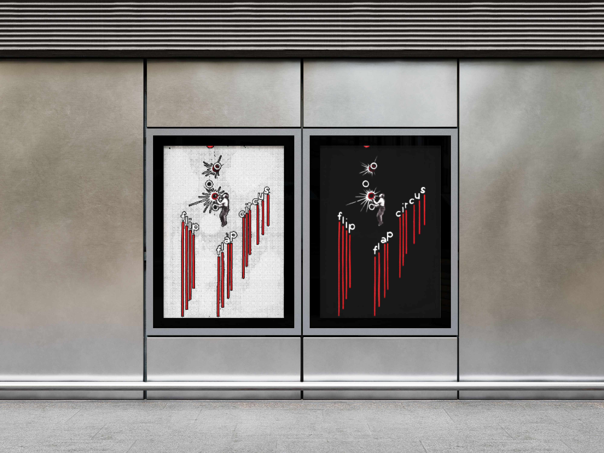

Flip Flap Circus
Affiche
Technique : Technique mixte
Format : 29,7 × 42 cm
Conception d'affiches expérimentales pour l'école Flip Flap Circus, jouant sur les textures et les contrastes du noir et blanc pour retranscrire la dimension poétique, onirique et presque irréelle de l'univers du cirque.
